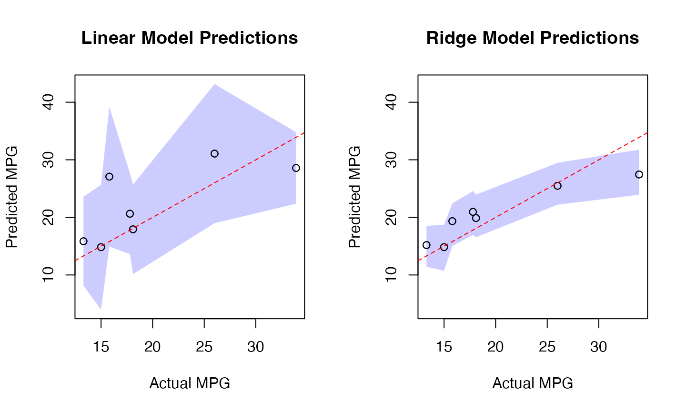
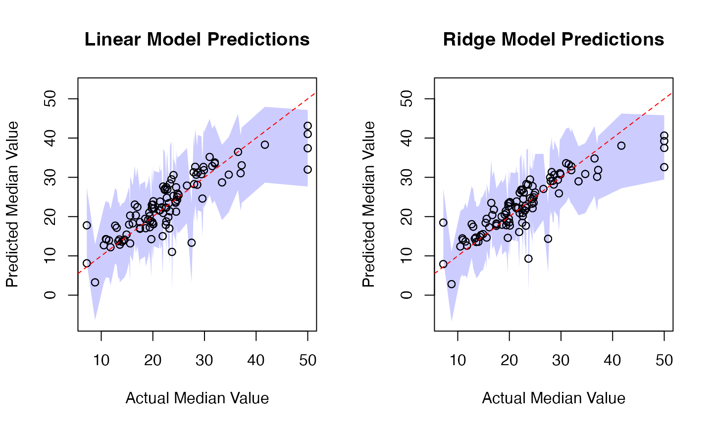
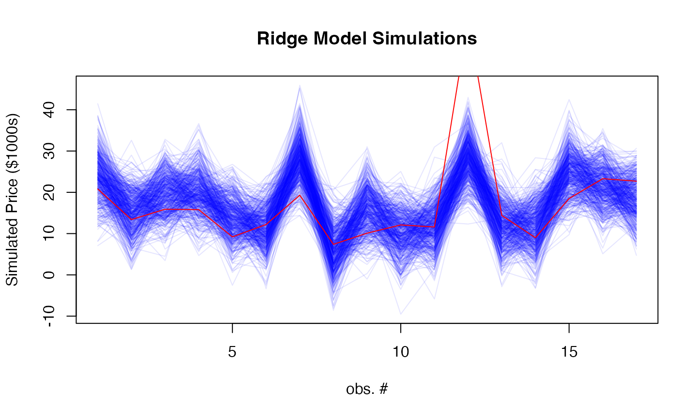

Ridge GLM model
GLM.Rmd
library(rvfl)
glmGaussian <- function(formula, ...) {
stats::glm(formula = formula,
family = "gaussian",
...)
}Example 1: MPG Prediction (mtcars dataset)
Fit models
# Fit regular linear model
start <- proc.time()[3]
lm_model <- lm(mpg ~ ., data = train_data)
print(proc.time()[3] - start)## elapsed
## 0.013##
## Call:
## lm(formula = mpg ~ ., data = train_data)
##
## Residuals:
## Min 1Q Median 3Q Max
## -3.5211 -0.9792 -0.0324 1.1808 4.9814
##
## Coefficients:
## Estimate Std. Error t value Pr(>|t|)
## (Intercept) -5.054416 25.456900 -0.199 0.8455
## cyl 0.695392 1.396506 0.498 0.6262
## disp 0.005254 0.017342 0.303 0.7664
## hp -0.007610 0.027723 -0.274 0.7877
## drat 4.128157 2.724353 1.515 0.1520
## wt -1.621396 2.139071 -0.758 0.4610
## qsec 0.064356 0.932144 0.069 0.9459
## vs 0.138716 3.421183 0.041 0.9682
## am -0.498476 2.956568 -0.169 0.8685
## gear 4.402648 2.287816 1.924 0.0749 .
## carb -1.999389 1.299580 -1.538 0.1462
## ---
## Signif. codes: 0 '***' 0.001 '**' 0.01 '*' 0.05 '.' 0.1 ' ' 1
##
## Residual standard error: 2.464 on 14 degrees of freedom
## Multiple R-squared: 0.8938, Adjusted R-squared: 0.818
## F-statistic: 11.79 on 10 and 14 DF, p-value: 3.4e-05## 2.5 % 97.5 %
## (Intercept) -59.65403559 49.54520296
## cyl -2.29981561 3.69060001
## disp -0.03194096 0.04244882
## hp -0.06707095 0.05185084
## drat -1.71500030 9.97131342
## wt -6.20924769 2.96645550
## qsec -1.93489537 2.06360651
## vs -7.19899241 7.47642359
## am -6.83968216 5.84273112
## gear -0.50422869 9.30952400
## carb -4.78671119 0.78793282
# Fit calibrated model
start <- proc.time()[3]
ridge_model <- rvfl::calibmodel(lambda=10**seq(-10, 10, length.out=100), x = as.matrix(train_data[,-1]), y = train_data$mpg, engine = glmGaussian)
print(proc.time()[3] - start)## elapsed
## 0.037##
## Call:
## stats::glm(formula = formula, family = "gaussian", data = ..1)
##
## Coefficients:
## Estimate Std. Error t value Pr(>|t|)
## cyl -0.4956 0.7586 -0.653 0.524
## disp -0.5709 0.7473 -0.764 0.458
## hp -0.6475 0.7508 -0.862 0.403
## drat 0.8272 0.6951 1.190 0.254
## wt -0.7784 0.7239 -1.075 0.300
## qsec 0.2927 0.7384 0.396 0.698
## vs 0.4345 0.7133 0.609 0.552
## am 0.7154 0.6849 1.045 0.314
## gear 0.4152 0.7179 0.578 0.572
## carb -0.7023 0.6358 -1.105 0.288
##
## (Dispersion parameter for gaussian family taken to be 8.940941)
##
## Null deviance: 485.57 on 24 degrees of freedom
## Residual deviance: 125.17 on 14 degrees of freedom
## AIC: 129.75
##
## Number of Fisher Scoring iterations: 2## Waiting for profiling to be done...## 2.5 % 97.5 %
## cyl -1.9824363 0.9911683
## disp -2.0355808 0.8938536
## hp -2.1190707 0.8240451
## drat -0.5351587 2.1895921
## wt -2.1972054 0.6403131
## qsec -1.1544794 1.7398013
## vs -0.9634760 1.8324621
## am -0.6269882 2.0578789
## gear -0.9918421 1.8221673
## carb -1.9484933 0.5438550
#print(simulate(ridge_model, newdata = test_data))Compare predictions
results <- data.frame(
Actual = mtcars[-train_idx, ]$mpg,
LM_Pred = lm_pred[,"fit"],
LM_Lower = lm_pred[,"lwr"],
LM_Upper = lm_pred[,"upr"],
Ridge_Pred = ridge_pred[,"fit"],
Ridge_Lower = ridge_pred[,"lwr"],
Ridge_Upper = ridge_pred[,"upr"]
)
# Print results
print("Prediction Intervals Comparison:")## [1] "Prediction Intervals Comparison:"## Actual LM_Pred LM_Lower LM_Upper Ridge_Pred Ridge_Lower
## Valiant 18.1 17.93324 10.149847 25.71663 19.88520 16.55519
## Merc 280C 17.8 20.63530 13.636618 27.63398 20.95955 16.97131
## Toyota Corolla 33.9 28.58373 22.379666 34.78779 27.44891 23.92696
## Camaro Z28 13.3 15.85710 8.140858 23.57335 15.19122 11.43924
## Porsche 914-2 26.0 31.07535 18.988702 43.16201 25.48120 22.20837
## Ford Pantera L 15.8 27.07516 14.930150 39.22016 19.34804 15.02970
## Ridge_Upper
## Valiant 23.95417
## Merc 280C 24.56564
## Toyota Corolla 31.76149
## Camaro Z28 18.52793
## Porsche 914-2 29.47377
## Ford Pantera L 22.42565
# Calculate coverage and Winkler scores
lm_coverage <- mean(mtcars[-train_idx, ]$mpg >= results$LM_Lower &
mtcars[-train_idx, ]$mpg <= results$LM_Upper)
ridge_coverage <- mean(mtcars[-train_idx, ]$mpg >= results$Ridge_Lower &
mtcars[-train_idx, ]$mpg <= results$Ridge_Upper)
lm_winkler <- misc::winkler_score(mtcars[-train_idx, ]$mpg, results$LM_Lower, results$LM_Upper)
ridge_winkler <- misc::winkler_score(mtcars[-train_idx, ]$mpg, results$Ridge_Lower, results$Ridge_Upper)
print(sprintf("\nPrediction interval metrics:"))## [1] "\nPrediction interval metrics:"
print(sprintf("Linear Model: %.1f%% coverage, %.3f Winkler score",
100 * lm_coverage, mean(lm_winkler)))## [1] "Linear Model: 100.0% coverage, 18.226 Winkler score"
print(sprintf("Calibrated Model: %.1f%% coverage, %.3f Winkler score",
100 * ridge_coverage, mean(ridge_winkler)))## [1] "Calibrated Model: 85.7% coverage, 19.732 Winkler score"
# Set common y-axis limits for both plots
y_limits <- range(c(results$LM_Lower, results$LM_Upper,
results$Ridge_Lower, results$Ridge_Upper))
# Plot prediction intervals
par(mfrow=c(1,2))
# Linear Model Plot
plot(results$Actual, results$LM_Pred,
main="Linear Model Predictions",
xlab="Actual MPG", ylab="Predicted MPG",
ylim=y_limits)
# Add shaded prediction intervals
x_ordered <- order(results$Actual)
polygon(c(results$Actual[x_ordered], rev(results$Actual[x_ordered])),
c(results$LM_Lower[x_ordered], rev(results$LM_Upper[x_ordered])),
col=rgb(0, 0, 1, 0.2), border=NA)
points(results$Actual, results$LM_Pred) # Replot points over shading
abline(0, 1, col="red", lty=2) # Add diagonal line
# Ridge Model Plot
plot(results$Actual, results$Ridge_Pred,
main="Ridge Model Predictions",
xlab="Actual MPG", ylab="Predicted MPG",
ylim=y_limits)
# Add shaded prediction intervals
polygon(c(results$Actual[x_ordered], rev(results$Actual[x_ordered])),
c(results$Ridge_Lower[x_ordered], rev(results$Ridge_Upper[x_ordered])),
col=rgb(0, 0, 1, 0.2), border=NA)
points(results$Actual, results$Ridge_Pred) # Replot points over shading
abline(0, 1, col="red", lty=2) # Add diagonal line
# Add simulation plot
par(mfrow=c(1,1))
# Generate 100 simulations
sims <- simulate(ridge_model, newdata = as.matrix(test_data), nsim = 500)
# Plot simulations
matplot(sims, type = "l",
col = rgb(0, 0, 1, 0.1), lty = 1,
xlab = "obs. #", ylab = "Simulated MPG",
main = "Ridge Model Simulations")
lines(mtcars[-train_idx, ]$mpg, col = "red") 
Example 2: Boston Housing Price Prediction
Fit models
# Fit regular linear model
start <- proc.time()[3]
lm_model <- lm(medv ~ ., data = train_data)
print(proc.time()[3] - start)## elapsed
## 0.015##
## Call:
## lm(formula = medv ~ ., data = train_data)
##
## Residuals:
## Min 1Q Median 3Q Max
## -15.220 -2.757 -0.494 1.863 26.961
##
## Coefficients:
## Estimate Std. Error t value Pr(>|t|)
## (Intercept) 35.832339 5.763210 6.217 1.30e-09 ***
## crim -0.095389 0.034717 -2.748 0.006282 **
## zn 0.042689 0.016086 2.654 0.008283 **
## indus -0.033013 0.073521 -0.449 0.653657
## chas 2.506064 0.939731 2.667 0.007977 **
## nox -17.521010 4.237379 -4.135 4.35e-05 ***
## rm 3.966727 0.477640 8.305 1.66e-15 ***
## age 0.006479 0.014922 0.434 0.664410
## dis -1.463187 0.232348 -6.297 8.17e-10 ***
## rad 0.253984 0.075379 3.369 0.000828 ***
## tax -0.009853 0.004350 -2.265 0.024068 *
## ptratio -1.002914 0.147016 -6.822 3.44e-11 ***
## black 0.008723 0.002984 2.923 0.003664 **
## lstat -0.501984 0.057704 -8.699 < 2e-16 ***
## ---
## Signif. codes: 0 '***' 0.001 '**' 0.01 '*' 0.05 '.' 0.1 ' ' 1
##
## Residual standard error: 4.835 on 390 degrees of freedom
## Multiple R-squared: 0.7403, Adjusted R-squared: 0.7316
## F-statistic: 85.51 on 13 and 390 DF, p-value: < 2.2e-16## 2.5 % 97.5 %
## (Intercept) 24.50149090 47.16318623
## crim -0.16364441 -0.02713269
## zn 0.01106383 0.07431451
## indus -0.17755967 0.11153316
## chas 0.65849254 4.35363615
## nox -25.85197459 -9.19004505
## rm 3.02765548 4.90579898
## age -0.02285933 0.03581667
## dis -1.91999833 -1.00637601
## rad 0.10578379 0.40218383
## tax -0.01840515 -0.00129986
## ptratio -1.29195676 -0.71387117
## black 0.00285660 0.01458927
## lstat -0.61543411 -0.38853422
# Fit calibrated model
start <- proc.time()[3]
ridge_model <- rvfl::calibmodel(lambda=10**seq(-10, 10, length.out=100), x = as.matrix(train_data[,-14]), y = train_data$medv, engine = glmGaussian)
print(proc.time()[3] - start)## elapsed
## 0.075##
## Call:
## stats::glm(formula = formula, family = "gaussian", data = ..1)
##
## Coefficients:
## Estimate Std. Error t value Pr(>|t|)
## crim -1.0059 0.5000 -2.012 0.045575 *
## zn 0.8264 0.4991 1.656 0.099298 .
## indus 0.1430 0.7574 0.189 0.850401
## chas 0.6056 0.3571 1.696 0.091434 .
## nox -1.8962 0.6871 -2.760 0.006311 **
## rm 2.7488 0.4796 5.731 3.56e-08 ***
## age 0.7043 0.6016 1.171 0.243052
## dis -2.1701 0.6775 -3.203 0.001579 **
## rad 1.9496 0.9275 2.102 0.036785 *
## tax -1.3630 1.0753 -1.268 0.206424
## ptratio -1.7350 0.4696 -3.694 0.000283 ***
## black 0.7928 0.4409 1.798 0.073660 .
## lstat -3.9392 0.5793 -6.800 1.15e-10 ***
## ---
## Signif. codes: 0 '***' 0.001 '**' 0.01 '*' 0.05 '.' 0.1 ' ' 1
##
## (Dispersion parameter for gaussian family taken to be 25.65261)
##
## Null deviance: 16781.8 on 216 degrees of freedom
## Residual deviance: 5207.5 on 203 degrees of freedom
## AIC: 1328.4
##
## Number of Fisher Scoring iterations: 2
#print(confint(ridge_model$model))
#print(simulate(ridge_model, newdata = test_data))Make predictions and compare
lm_pred <- predict(lm_model, newdata = test_data, interval = "prediction")
ridge_pred <- predict(ridge_model, newdata = as.matrix(test_data), method="gaussian")
results <- data.frame(
Actual = Boston[-train_idx, ]$medv,
LM_Pred = lm_pred[,"fit"],
LM_Lower = lm_pred[,"lwr"],
LM_Upper = lm_pred[,"upr"],
Ridge_Pred = ridge_pred[,"fit"],
Ridge_Lower = ridge_pred[,"lwr"],
Ridge_Upper = ridge_pred[,"upr"]
)
# Print results
print("Prediction Intervals Comparison:")## [1] "Prediction Intervals Comparison:"## Actual LM_Pred LM_Lower LM_Upper Ridge_Pred Ridge_Lower Ridge_Upper
## 1 24.0 30.57209 20.958399 40.18579 29.44374 20.432895 38.62332
## 3 34.7 30.68339 21.107377 40.25940 30.84550 20.892099 38.71279
## 4 33.4 28.70511 19.107688 38.30253 28.97805 20.359013 37.89275
## 18 17.5 17.06191 7.487523 26.63630 17.65891 9.754859 27.10033
## 21 13.6 12.85420 3.239688 22.46872 13.53186 4.287351 22.56573
## 24 14.5 14.14956 4.535627 23.76348 15.32131 6.096803 24.66801
# Calculate coverage and Winkler scores
lm_coverage <- mean(Boston[-train_idx, ]$medv >= results$LM_Lower &
Boston[-train_idx, ]$medv <= results$LM_Upper)
ridge_coverage <- mean(Boston[-train_idx, ]$medv >= results$Ridge_Lower &
Boston[-train_idx, ]$medv <= results$Ridge_Upper)
lm_winkler <- misc::winkler_score(Boston[-train_idx, ]$medv, results$LM_Lower, results$LM_Upper)
ridge_winkler <- misc::winkler_score(Boston[-train_idx, ]$medv, results$Ridge_Lower, results$Ridge_Upper)
print(sprintf("\nPrediction interval metrics:"))## [1] "\nPrediction interval metrics:"
print(sprintf("Linear Model: %.1f%% coverage, %.3f Winkler score",
100 * lm_coverage, mean(lm_winkler)))## [1] "Linear Model: 95.1% coverage, 26.711 Winkler score"
print(sprintf("Calibrated Model: %.1f%% coverage, %.3f Winkler score",
100 * ridge_coverage, mean(ridge_winkler)))## [1] "Calibrated Model: 94.1% coverage, 29.029 Winkler score"
# Visualization
# Set common y-axis limits for both plots
y_limits <- range(c(results$LM_Lower, results$LM_Upper,
results$Ridge_Lower, results$Ridge_Upper))
par(mfrow=c(1,2))
# Linear Model Plot
plot(results$Actual, results$LM_Pred,
main="Linear Model Predictions",
xlab="Actual Median Value", ylab="Predicted Median Value",
ylim=y_limits)
x_ordered <- order(results$Actual)
polygon(c(results$Actual[x_ordered], rev(results$Actual[x_ordered])),
c(results$LM_Lower[x_ordered], rev(results$LM_Upper[x_ordered])),
col=rgb(0, 0, 1, 0.2), border=NA)
points(results$Actual, results$LM_Pred)
abline(0, 1, col="red", lty=2)
# Ridge Model Plot
plot(results$Actual, results$Ridge_Pred,
main="Ridge Model Predictions",
xlab="Actual Median Value", ylab="Predicted Median Value",
ylim=y_limits)
polygon(c(results$Actual[x_ordered], rev(results$Actual[x_ordered])),
c(results$Ridge_Lower[x_ordered], rev(results$Ridge_Upper[x_ordered])),
col=rgb(0, 0, 1, 0.2), border=NA)
points(results$Actual, results$Ridge_Pred)
abline(0, 1, col="red", lty=2)
# Add simulation plot
par(mfrow=c(1,1))
sims <- simulate(ridge_model, newdata = as.matrix(test_data), nsim = 500)
matplot(sims, type = "l",
col = rgb(0, 0, 1, 0.1), lty = 1,
xlab = "obs. #", ylab = "Simulated Median Value",
main = "Ridge Model Simulations")
lines(Boston[-train_idx, ]$medv, col = "red")
Example 3: Car Price Analysis (Cars93 dataset)
Load and prepare data
data(Cars93, package = "MASS")
# Remove rows with missing values
Cars93 <- na.omit(Cars93)
# Select numeric predictors and price as response
predictors <- c("MPG.city", "MPG.highway", "EngineSize", "Horsepower",
"RPM", "Rev.per.mile", "Fuel.tank.capacity", "Length",
"Wheelbase", "Width", "Turn.circle", "Weight")
car_data <- Cars93[, c(predictors, "Price")]
set.seed(1243)
train_idx <- sample(nrow(car_data), size = floor(0.8 * nrow(car_data)))
train_data <- car_data[train_idx, ]
test_data <- car_data[-train_idx, -which(names(car_data) == "Price")]Fit models
# Fit regular linear model
start <- proc.time()[3]
lm_model <- lm(Price ~ ., data = train_data)
print(proc.time()[3] - start)## elapsed
## 0.011##
## Call:
## lm(formula = Price ~ ., data = train_data)
##
## Residuals:
## Min 1Q Median 3Q Max
## -8.9444 -3.4879 -0.0823 2.5740 10.7036
##
## Coefficients:
## Estimate Std. Error t value Pr(>|t|)
## (Intercept) 6.0285088 31.8235292 0.189 0.8505
## MPG.city -0.3069383 0.4798163 -0.640 0.5252
## MPG.highway -0.0041568 0.4591254 -0.009 0.9928
## EngineSize 2.4810783 2.4779636 1.001 0.3213
## Horsepower 0.1016741 0.0446071 2.279 0.0268 *
## RPM 0.0001602 0.0023006 0.070 0.9448
## Rev.per.mile 0.0049762 0.0026868 1.852 0.0697 .
## Fuel.tank.capacity -0.1866149 0.5198553 -0.359 0.7211
## Length 0.0203242 0.1333518 0.152 0.8795
## Wheelbase 0.4888949 0.2655782 1.841 0.0713 .
## Width -0.8957689 0.4446575 -2.015 0.0491 *
## Turn.circle -0.3835124 0.3579624 -1.071 0.2889
## Weight 0.0041302 0.0059593 0.693 0.4914
## ---
## Signif. codes: 0 '***' 0.001 '**' 0.01 '*' 0.05 '.' 0.1 ' ' 1
##
## Residual standard error: 4.731 on 52 degrees of freedom
## Multiple R-squared: 0.7886, Adjusted R-squared: 0.7398
## F-statistic: 16.16 on 12 and 52 DF, p-value: 1.548e-13## 2.5 % 97.5 %
## (Intercept) -5.783007e+01 69.887091986
## MPG.city -1.269760e+00 0.655883438
## MPG.highway -9.254594e-01 0.917145804
## EngineSize -2.491319e+00 7.453475962
## Horsepower 1.216348e-02 0.191184768
## RPM -4.456410e-03 0.004776746
## Rev.per.mile -4.152533e-04 0.010367616
## Fuel.tank.capacity -1.229781e+00 0.856550981
## Length -2.472657e-01 0.287914102
## Wheelbase -4.402679e-02 1.021816593
## Width -1.788039e+00 -0.003498354
## Turn.circle -1.101817e+00 0.334791684
## Weight -7.828121e-03 0.016088453
# Fit calibrated model
start <- proc.time()[3]
ridge_model <- rvfl::calibmodel(lambda=10**seq(-10, 10, length.out=100), x = as.matrix(train_data[,-which(names(train_data) == "Price")]),
y = train_data$Price, engine = glmGaussian)
print(proc.time()[3] - start)## elapsed
## 0.037##
## Call:
## stats::glm(formula = formula, family = "gaussian", data = ..1)
##
## Coefficients:
## Estimate Std. Error t value Pr(>|t|)
## MPG.city -0.90230 1.49983 -0.602 0.5516
## MPG.highway -0.33641 1.39992 -0.240 0.8116
## EngineSize 2.56961 1.62400 1.582 0.1231
## Horsepower 2.43635 1.35158 1.803 0.0806 .
## RPM 0.90504 1.05839 0.855 0.3987
## Rev.per.mile 1.30430 1.26257 1.033 0.3091
## Fuel.tank.capacity 0.24579 1.53119 0.161 0.8734
## Length 0.48894 1.63807 0.298 0.7672
## Wheelbase 1.73442 1.50930 1.149 0.2588
## Width -1.03940 1.50301 -0.692 0.4941
## Turn.circle -0.04015 1.23036 -0.033 0.9742
## Weight 1.26377 1.72926 0.731 0.4701
## ---
## Signif. codes: 0 '***' 0.001 '**' 0.01 '*' 0.05 '.' 0.1 ' ' 1
##
## (Dispersion parameter for gaussian family taken to be 21.48113)
##
## Null deviance: 2498.01 on 45 degrees of freedom
## Residual deviance: 708.88 on 33 degrees of freedom
## AIC: 277.77
##
## Number of Fisher Scoring iterations: 2
#print(confint(ridge_model$model))
#print(simulate(ridge_model, newdata = as.matrix(test_data)))Make predictions and compare
lm_pred <- predict(lm_model, newdata = test_data, interval = "prediction")
ridge_pred <- predict(ridge_model, newdata = as.matrix(test_data), method="gaussian")
results <- data.frame(
Actual = car_data[-train_idx, "Price"],
LM_Pred = lm_pred[,"fit"],
LM_Lower = lm_pred[,"lwr"],
LM_Upper = lm_pred[,"upr"],
Ridge_Pred = ridge_pred[,"fit"],
Ridge_Lower = ridge_pred[,"lwr"],
Ridge_Upper = ridge_pred[,"upr"]
)
# Print results
print("Prediction Intervals Comparison:")## [1] "Prediction Intervals Comparison:"
print(results)## Actual LM_Pred LM_Lower LM_Upper Ridge_Pred Ridge_Lower Ridge_Upper
## 7 20.8 22.284761 12.3951390 32.17438 23.917810 13.4779817 33.64091
## 12 13.4 14.354853 3.3289673 25.38074 14.785361 3.6024949 23.16887
## 15 15.9 17.852333 7.2347759 28.46989 19.449692 9.2716783 28.43535
## 21 15.8 19.516709 9.4219263 29.61149 19.996143 10.7438145 30.25961
## 23 9.2 14.340649 3.5068316 25.17447 14.165389 3.9670943 23.76032
## 29 12.2 9.028432 -1.4360619 19.49293 11.070554 2.5323276 21.22703
## 30 19.3 29.775630 19.1961282 40.35513 27.897380 17.8470710 40.10897
## 31 7.4 6.013838 -5.5354656 17.56314 5.517598 -3.9056060 17.45895
## 32 10.1 14.806645 4.1551453 25.45814 15.464229 5.5927639 26.44416
## 42 12.1 8.704607 -3.6984146 21.10763 9.666462 -0.0936653 20.58358
## 54 11.6 10.002970 -0.3839704 20.38991 12.338981 3.2954121 21.43936
## 59 61.9 34.711053 24.1509123 45.27119 28.608455 18.2021706 38.94056
## 72 14.4 9.110664 -1.1222765 19.34360 12.150602 2.1902366 21.30203
## 73 9.0 11.005860 0.0448295 21.96689 11.427271 2.3554448 20.36018
## 76 18.5 26.775186 16.6537717 36.89660 25.025773 14.6108309 35.67831
## 91 23.3 24.122428 12.0542302 36.19063 22.137527 12.8617452 31.22791
## 92 22.7 18.531114 8.4532906 28.60894 18.636834 8.0602047 28.21954
# Calculate coverage and Winkler scores
lm_coverage <- mean(car_data[-train_idx, "Price"] >= results$LM_Lower &
car_data[-train_idx, "Price"] <= results$LM_Upper)
ridge_coverage <- mean(car_data[-train_idx, "Price"] >= results$Ridge_Lower &
car_data[-train_idx, "Price"] <= results$Ridge_Upper)
lm_winkler <- misc::winkler_score(car_data[-train_idx, "Price"], results$LM_Lower, results$LM_Upper)
ridge_winkler <- misc::winkler_score(car_data[-train_idx, "Price"], results$Ridge_Lower, results$Ridge_Upper)
print(sprintf("\nPrediction interval metrics:"))## [1] "\nPrediction interval metrics:"
print(sprintf("Linear Model: %.1f%% coverage, %.3f Winkler score",
100 * lm_coverage, mean(lm_winkler)))## [1] "Linear Model: 94.1% coverage, 60.599 Winkler score"
print(sprintf("Calibrated Model: %.1f%% coverage, %.3f Winkler score",
100 * ridge_coverage, mean(ridge_winkler)))## [1] "Calibrated Model: 94.1% coverage, 73.884 Winkler score"
# Visualization
# Set common y-axis limits for both plots
y_limits <- range(c(results$LM_Lower, results$LM_Upper,
results$Ridge_Lower, results$Ridge_Upper))
par(mfrow=c(1,2))
# Linear Model Plot
plot(results$Actual, results$LM_Pred,
main="Linear Model Predictions",
xlab="Actual Price ($1000s)", ylab="Predicted Price ($1000s)",
ylim=y_limits)
x_ordered <- order(results$Actual)
polygon(c(results$Actual[x_ordered], rev(results$Actual[x_ordered])),
c(results$LM_Lower[x_ordered], rev(results$LM_Upper[x_ordered])),
col=rgb(0, 0, 1, 0.2), border=NA)
points(results$Actual, results$LM_Pred)
abline(0, 1, col="red", lty=2)
# Ridge Model Plot
plot(results$Actual, results$Ridge_Pred,
main="Ridge Model Predictions",
xlab="Actual Price ($1000s)", ylab="Predicted Price ($1000s)",
ylim=y_limits)
polygon(c(results$Actual[x_ordered], rev(results$Actual[x_ordered])),
c(results$Ridge_Lower[x_ordered], rev(results$Ridge_Upper[x_ordered])),
col=rgb(0, 0, 1, 0.2), border=NA)
points(results$Actual, results$Ridge_Pred)
abline(0, 1, col="red", lty=2)
# Add simulation plot
par(mfrow=c(1,1))
sims <- simulate(ridge_model, newdata = as.matrix(test_data), nsim = 500)
matplot(sims, type = "l",
col = rgb(0, 0, 1, 0.1), lty = 1,
xlab = "obs. #", ylab = "Simulated Price ($1000s)",
main = "Ridge Model Simulations")
lines(car_data[-train_idx, "Price"], col = "red")